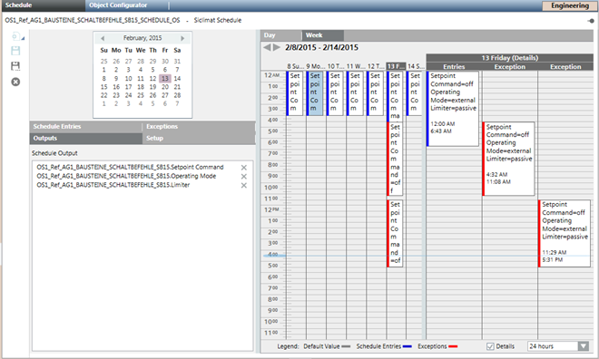
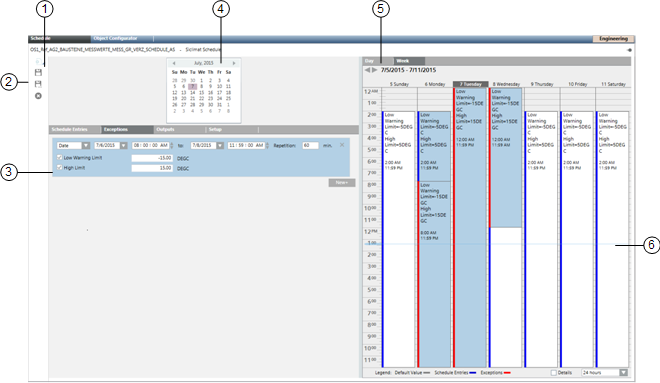

SICLIMAT X
This section provides background information for using schedules in SICLIMAT X. For procedures, see the step-by-step section.
The scheduling functionality allows you to create daily or weekly schedules for your SICLIMAT X objects, while a management station can run multiple calendars or schedules at the same time. It also allows you to create exceptions to schedules. When an exception is ON, it overrides the weekly schedule. When the exception is OFF, control returns to the weekly schedule.

NOTE:
One scheduler controls one output (several parameters supported).

Overview of SICLIMAT X Schedules
You can set up central schedules on management stations or local (S7) schedules on field panels at your facility.
Calendars and time schedules allow for changing object parameters, set values and so on, for chronological control of specific plants and technical equipment.
Features
The SICLIMAT X Scheduler allows you to:
- Create calendars and associate them with schedules
- View daily and weekly schedules
- Create schedule entries from the weekly or daily view
- View schedule details
- Create exceptions to schedules
- Copy current settings from one schedule to another
- Execute AS<->OS schedules conversion
SICLIMAT X Scheduler Objects
The SICLIMAT X scheduling includes the following object types:
- SICLIMAT Automation System (AS) Schedule - CPU scheduling, not dependent on the management platform.
In case the management platform is faulty or disconnected, the AS schedule will run anyway. - SICLIMAT Operation System (OS) Schedule – Scheduling that depends on the management platform.
In case of management platform disconnection or failure, the OS schedule will be rescheduled.
NOTE:
If the device connection is not available after the import, the AS will not be synchronized. To allow synchronization, save a schedule object.
Schedules consist of a name and description, a toolbar for working with the schedule, a date picker, several tabs (Schedule Entries, Outputs, Exceptions, and Setup), daily and weekly views, and schedule details.
More about Views
Even though you can schedule entries from the weekly view, the weekly view shows only the resulting schedule and not the details of the schedule. For more flexibility in visualizing and creating schedule entries, you can use the Schedule Entries tab instead.
Default Date
By default, every new schedule begins with the current date and ends with current midnight. Once a new schedule is opened, you can choose the start and end date for the schedule.
Default Schedule Behavior
When you select a SICLIMAT schedule from System Browser, the Date Picker defaults to the current date, and the Schedule Entries tab becomes active.

| Name | Description |
1 | Schedule Name | Indicates the name of the schedule. |
2 | Scheduler Toolbar | Includes the following icons:
|
3 | Tabs |
|
4 | Date Picker | Allows you to select a day to view or create schedule entries. When first displayed or refreshed, the current day is selected by default. |
5 | Schedule tabs | When first displayed or refreshed, the current day is selected by default.
|
6 | Current Time Indicator | Displays a light-blue bar corresponding to the time of day. |
 : To open a new scheduling object (New SICLIMAT Schedule or New SICLIMAT Calendar).
: To open a new scheduling object (New SICLIMAT Schedule or New SICLIMAT Calendar). : To save the changes.
: To save the changes. : To save the current object as a new object with a different name and description.
: To save the current object as a new object with a different name and description. : To remove the current object from the system.
: To remove the current object from the system.